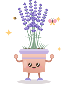
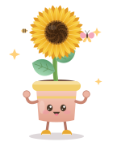
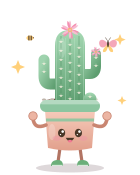
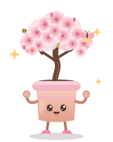
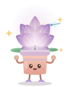

Deslize para os lados para passar de tela
Um app para quem sai das redes se sentindo menor. Uma planta acompanha você, protege nos momentos de comparação e cresce junto, sem nunca cobrar, sem nunca culpar.





A personagem nunca fica parada. Estes são os momentos principais, gravados das telas como elas se mexem.